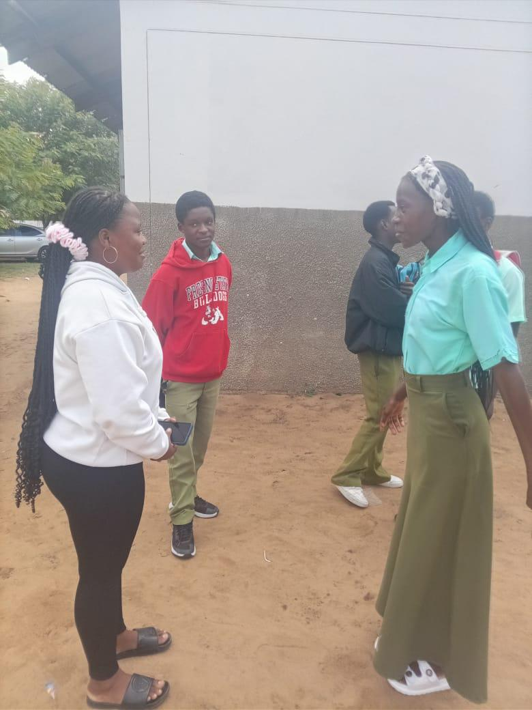

1. Educação e sensibilização
- Realizar palestras e debates regulares sobre respeito, consentimento e assédio
- Incluir educação para a cidadania e direitos humanos no currículo
- Formar professores para identificar e actuar perante situações de assédio
2. Canais de denúncia seguros
- Criar uma caixa de denúncias anónimas na escola
- Designar um ponto focal (professor ou psicólogo) de confiança
- Garantir confidencialidade e protecção de quem denuncia
3. Regras claras e sanções
- Incluir o assédio sexual no regulamento interno da escola
- Aplicar medidas disciplinares justas e transparentes
- Informar alunos e encarregados sobre as consequências
4. Apoio às vítimas
- Disponibilizar aconselhamento psicológico
- Encaminhar casos graves para as autoridades competentes
- Acompanhar a vítima para que não abandone a escola

Criar espaços seguros de diálogo é essencial
A prevenção funciona melhor quando toda a comunidade escolar participa: alunos, professores, direcção e famílias.